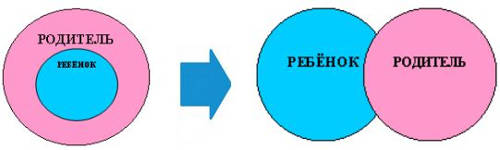

Всё ВОСПИТАНИЕ в Пространстве сводится к созданию условий для самосовершенствования человека на основе его Права свободного выбора.
Эта концепция управления базируется на Истине «Человек есть Великое Подобие Создателя», т.е. человек АПРИОРИ совершенен.
Цель задач по воспитанию нового поколения та же, что и для «взрослых»: Вера, Любовь, знание и соблюдение Канонов Вечности; познание структуры Мироздания.

И отправная точка этих взаимоотношений – РАВЕНСТВО одного перед другим, т.е. то, что в настоящий момент практически отсутствует между «взрослым» и «ребёнком». Равенство должно быть всеобъемлющим и исключать любые компромиссы (любые отступления).
Более того, учитель не может просто «внешне» демонстрировать равенство действиями, поведением или словами – Душа ребёнка остро чувствует и соответствующе реагирует на это проявление двуличности (а если точнее — лжи). Учитель должен БЫТЬ равным по своей Сути, по своим убеждениям, по своему восприятию окружающего Пространства. Должно быть осознанное понимание, что перед тобой не ученик, ребёнок, несмышлёныш, а Божественная Сущность, которая (ещё при рождении) уже имеет свою программу самосовершенствования и свои задачи на эту жизнь (воплощение).
Поэтому следующее правило в Культуре взаимоотношений не «что учитель хочет донести до ученика», а ЧТО УЧЕНИК (РЕБЁНОК) ХОЧЕТ узнать (получить) у учителя (взрослого). Подход «выявление у ребёнка способностей и их развитие» порочен в основе своей, ибо его истоки – это получение максимальной пользы (выгоды) с данного субъекта. «Способности» и «предназначение» человека не есть слова синонимы.
Понятие «расписание уроков (занятий)» также не имеет права на жизнь в новой Культуре взаимоотношений. Требуется ввести понятие «ЧУВСТВО ВНУТРЕННЕГО РИТМА» получения информации, которое не может, да и не должно коррелировать с «почасовым» восприятием времени. Скажем просто: ребёнок сам скажет, когда и чем он хочет заняться.
Из практического опыта могу сказать, что не менее 50-ти процентов информации ребёнок получает, наблюдая реакцию взрослых на окружающий Мир (события, людей…), поведение и промысел взрослых.
Кстати, всё вышеуказанное прекрасно формирует в ребёнке понятие «право свободного выбора – ответственность». Однако короткий этап амбиций придётся всё же пережить (как расплата за прежние отношения).
Как показал практический опыт (проб и ошибок), ЕДИНСТВЕННЫМ универсальным и обязательным (необходимым и достаточным) источником Знаний для подрастающего поколения являются Откровения (под Откровениями подразумеваются и Толкования людям Нового Века).
Однако при этом выявляются «белые пятна» — непонимание ребёнком терминов, научного лексикона и выражений, которые присутствуют в Откровениях. Всё не случайно и сопутствующие знания, которые необходимо изучать ребёнку из тех «классических» — это тот спектр и объем информации, который позволяет понять тексты Откровений. Необходимо (и не откладывая) создать методическое пособие (учебник), которое должно включать в себя требуемые для изучения разделы и параграфы наук, и расшифровку терминов и определений.
Поясняю, нельзя игнорировать то понятие, которое даёт Создатель в определении Материального Мира, как «Мира чувств и эмоций». Наоборот, в образовании детей это занимает одну из ключевых позиций. Имеется в виду та информационная область, которая именуется «музыка, художественная литература, кино». Тут мы оказались в вакууме.
На определённом этапе детей устраивали и оказывали несомненное и явное благотворное влияние советские фильмы, мультики, классические литературные произведения, которые действительно несут собой большой заряд позитивной энергии. Но у них этот этап прошёл ещё год назад. А дальше?
Дальше предложить нам было нечего. Признаемся честно: даже великие классические музыкальные произведения были написаны для духовного воспитания Пятой расы. Тем кто создан для Шестой нужен уже следующий Уровень.
Дальнейшее развитие событий предположить несложно: ребёнок начинает искать Духовную пищу в Интернете, а там… в общем, о чистоте медийного поля в интернете говорить не приходится. То, что предлагает современная драматургия для детей в театрах – полная безнравственность и бездарность по оценке самих же детей (пытался сам найти что-нибудь в интернете – только расстроился: всё равно всё ложь).
Остро и «ещё вчера» необходимы фильмы, пьесы, музыка и прочее творчество, созданное людьми с менталитетом, воспитанным на Откровениях. Пока положение таково: на одной чаше весов стопка книг с Истиной, а на другой – ложь огромной империи шоу-бизнеса с её киностудиями, телевидением, интернетом, играми и пр., матёрая в приёмах зрелищности и навязывании и имеющая в своём распоряжении всё физическое и медийное пространство. И искушение влезть в него у ребёнка непреодолимо, ибо нет альтернативы.